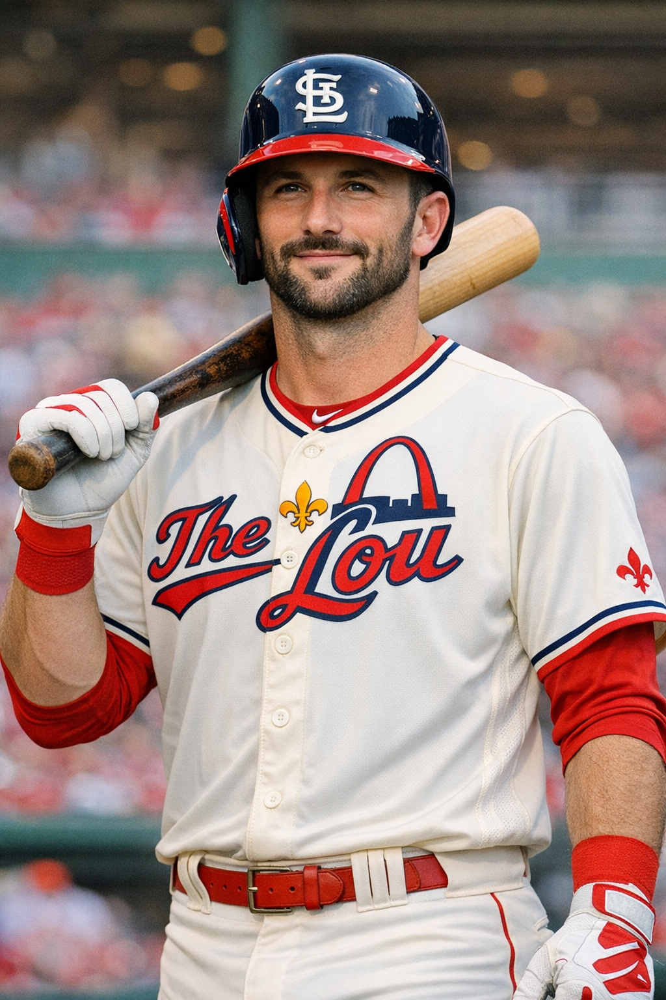

Tradition meets modern flair in “The Lou”

Few franchises in Major League Baseball carry the same sense of tradition as the St. Louis Cardinals. With a history stretching back to the late 1800s, the Cardinals have built a reputation for consistent excellence, disciplined player development, and a culture that values both grit and professionalism. Their long-standing rivalry with the Chicago Cubs has produced some of the most memorable moments in baseball, adding to the team’s storied identity.
The Cardinals’ success is rooted in a philosophy often referred to as “The Cardinal Way,” a system that emphasizes fundamentals, teamwork, and respect for the game. This approach has shaped generations of players and helped the organization remain competitive across eras. From the Gas House Gang of the 1930s to the powerhouse teams of the early 2000s, the franchise has consistently found ways to reinvent itself while staying true to its core values.
Fans in St. Louis take immense pride in their team’s legacy, and for good reason. With numerous World Series titles and a long list of Hall of Fame players, the Cardinals stand as one of the most successful and respected organizations in professional sports. Their history is not just a record of wins but a reflection of a community that lives and breathes baseball.
Cardinals baseball has always been defined by standout players who combine talent with leadership. Legends like Stan Musial, Bob Gibson, Ozzie Smith, and Albert Pujols have left lasting marks on the franchise, each bringing a unique style and personality to the field. Their contributions helped shape the team’s identity and set a standard for future generations.
Beyond individual stars, the Cardinals are known for cultivating a strong clubhouse culture. Veterans often mentor younger players, creating a sense of continuity and shared purpose. This environment has allowed the team to consistently develop homegrown talent and maintain a competitive edge even in seasons of transition. The emphasis on character and work ethic is a defining feature of the organization.
The fanbase, often called “Baseball Heaven,” is one of the most loyal and knowledgeable in the sport. Busch Stadium regularly fills with fans who appreciate the nuances of the game and support their team through every high and low. Whether it’s Opening Day festivities, the sea of red in the stands, or the electric atmosphere of postseason baseball, Cardinals fans play a central role in making the franchise one of the most iconic in the league.